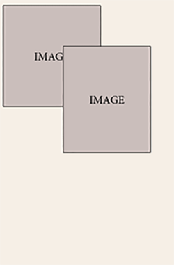
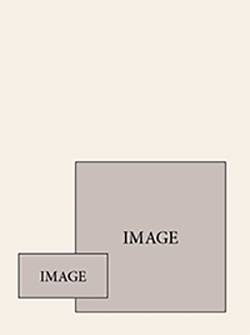

welcome to my webpage!
Hi there! My name is Chloe Sabey, and you've made it to my website! You can find out more about me in the "About Me" tab above . For now, please enjoy exploring my site. You can find my contact information in the "About Me" section, as well.
Best,
Chloe.com
